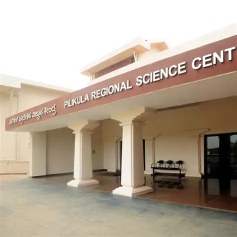

Pilikula Regional Science Centre
🧪 Pilikula Regional Science Centre – Overview:
The Pilikula Regional Science Centre (PRSC), located in Mangaluru, Karnataka, is a vibrant hub for
science education and exploration. Jointly established by the Department of Science & Technology,
Government of Karnataka, and the National Council of Science Museums, it aims to promote scientific
curiosity among students and the general public.
🌟 Key Features
- Interactive Exhibits: Fun science, biodiversity, and technology galleries.
- 3D Theatre & Planetarium: Immersive experiences with advanced projection systems.
- Science Park: Outdoor installations including a Dinosaur Park.
- Workshops & Demonstrations: Hands-on activities for all ages.
- Facilities: Library, auditorium, conference hall, and computer lab.